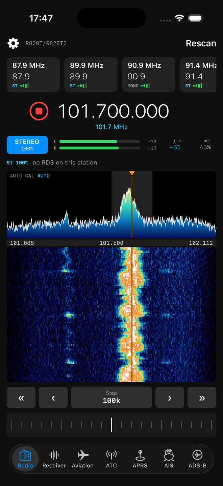
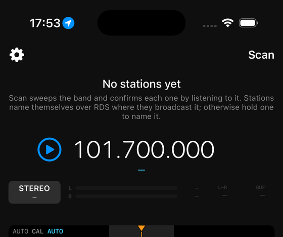
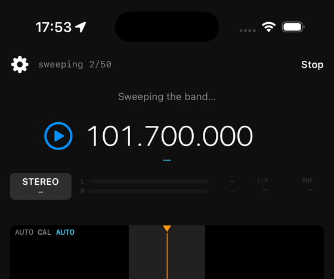
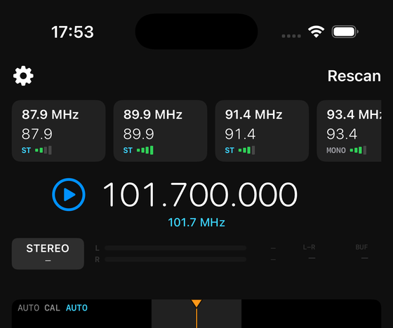
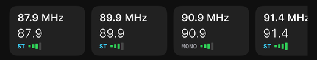
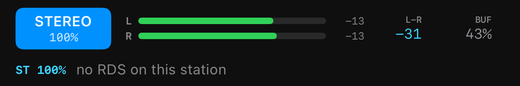
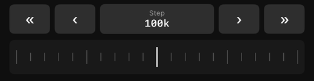

Radio 收音机
像车载收音机一样用：搜一次台，之后点哪个听哪个。这也是检验整套设备是否正常的最快办法。

第一次使用：搜台
- 刚打开时是空的第一次进入 Radio 页面，电台列表里什么都没有，写着 No stations yet。点右上角的 Scan 开始搜台。

- 先扫一遍整个波段左上角显示
sweeping 2/50这样的进度，App 正在把整个 FM 广播波段分段看一遍，找出所有可能有电台的频率。右上角的按钮变成 Stop，随时可以中止。
- 再逐个确认进度变成
confirming 90.9 MHz 4/19：App 对每个候选频率实际解调听一下，确认真的是广播才放进列表，所以列表里不会出现点了没声音的“假电台”。确认一个，列表里就多一个。
- 搜完了，点一个开始听按钮变回 Rescan 就是搜完了。整个过程根据采样率不同大约半分钟到一分钟。列表可以左右滑动，点一下电台就播放。

搬到另一个城市，或者换了天线之后，点 Rescan 重新搜一次。
页面上的东西

搜到的电台，左右滑动查看。ST 是立体声台，MONO 是单声道台，旁边的小格子是信号强弱。点一下播放，长按可以改名。

大号数字是当前频率，下面的小字是电台名（没有名字时显示频率）。左边的圆形按钮是播放 / 停止。

左边的按钮点一下在 AUTO / STEREO / MONO 之间切换，下面的百分比是实际的立体声分离程度；信号弱、有沙沙声时切到 MONO 会干净很多。L / R 是左右声道的音量，L−R 是两个声道的差异（数值越接近 0 立体声感越强），BUF 是音频缓冲的占用，稳定在一个数值附近说明网络顺畅。

当前频率附近的信号。上半部分是此刻的频谱，下半部分是随时间向下滚动的瀑布图，亮的竖条就是电台，中间的竖线是正在收听的频率。左上角的 AUTO 和 CAL 控制瀑布图的明暗：AUTO 自动调整，CAL 按当前的底噪重新校准一次。

‹ › 移动一个步进，« » 一次移动十个步进；中间的 Step 可以改步进大小（FM 广播用 100k）；拖动最下面的刻度盘可以连续调节。
给电台改名
电台默认显示频率。长按一个电台卡片，选 Rename，就可以写上它的名字，比如“音乐之声”。想恢复时长按选 Use the original name。
在有 RDS 广播的国家和地区，电台会自己播发名称，App 会自动显示；国内的电台大多不播发 RDS，所以需要自己起名。
顺便校准了接收机
每听一个立体声电台几秒钟，App 就会悄悄量一次接收机的频率误差。听过三个以上的立体声台之后，校准会自动生效，之后收航空、APRS、AIS 这些对频率要求高的信号就准了。详见频率校准。
常见情况
| 现象 | 原因和办法 |
|---|---|
| 搜不到台，或者只有一两个 | 天线太短或位置不好。把拉杆每边拉到约 75 厘米，放到窗边再搜一次。 |
| 有的台显示 MONO | 正常。新闻、谈话类电台常常用单声道播出。 |
| 立体声台有明显的沙沙声 | 立体声对信号强度要求更高。切到 MONO，或者改善天线。 |
| 切到别的页面，广播还在响 | 这是设计如此：声音在后台继续播放。回到 Radio 页面点停止，或者在使用同一只接收机的其它页面点播放，它会自动让出。 |